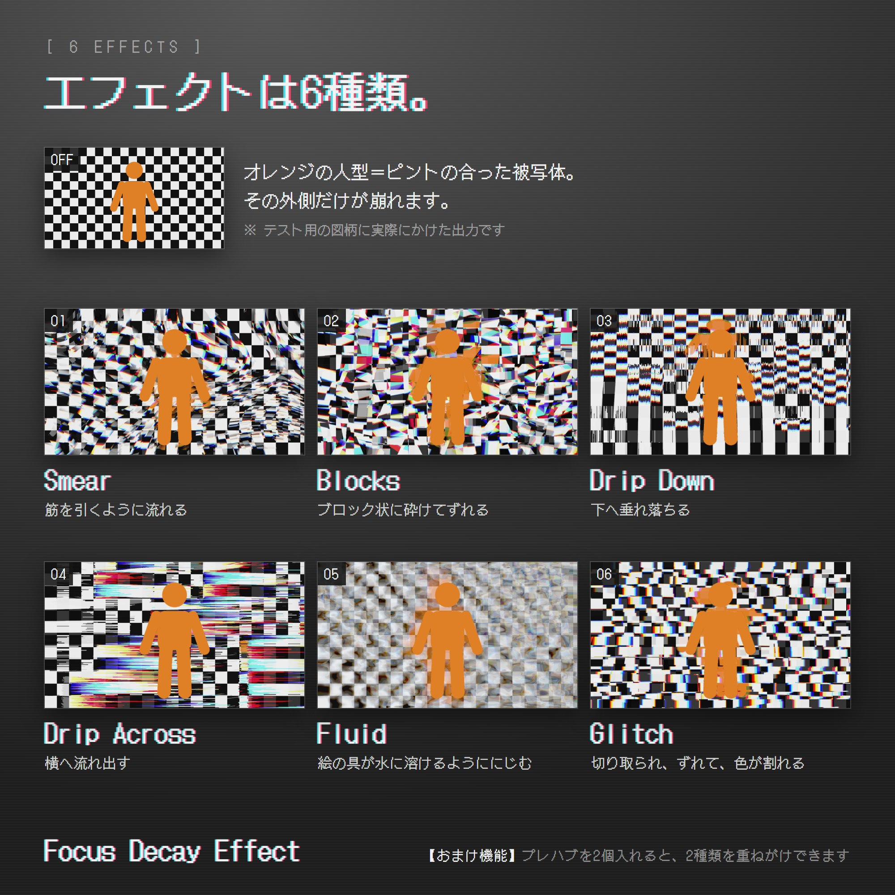
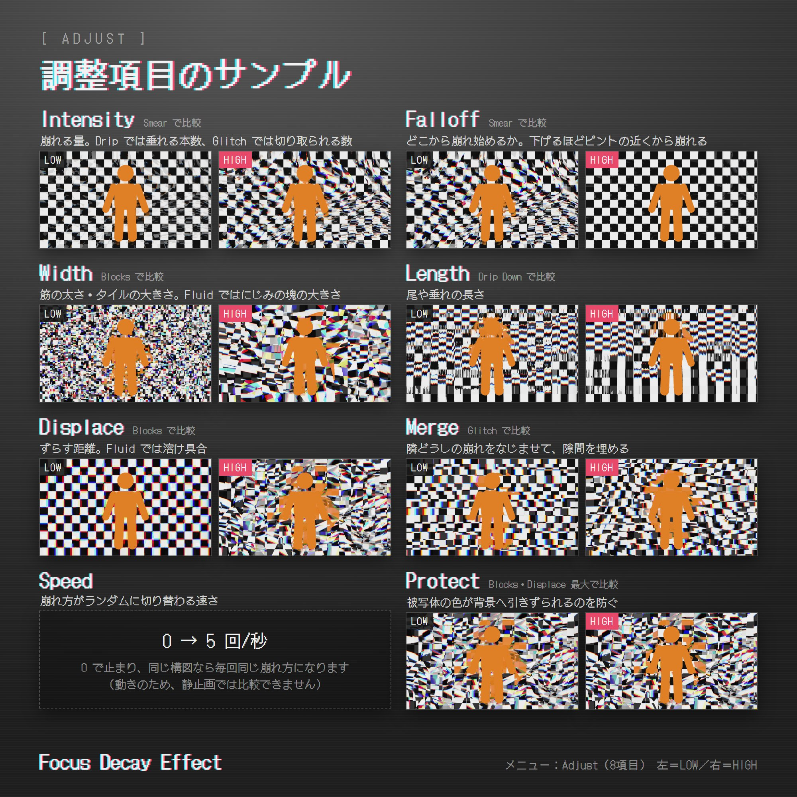
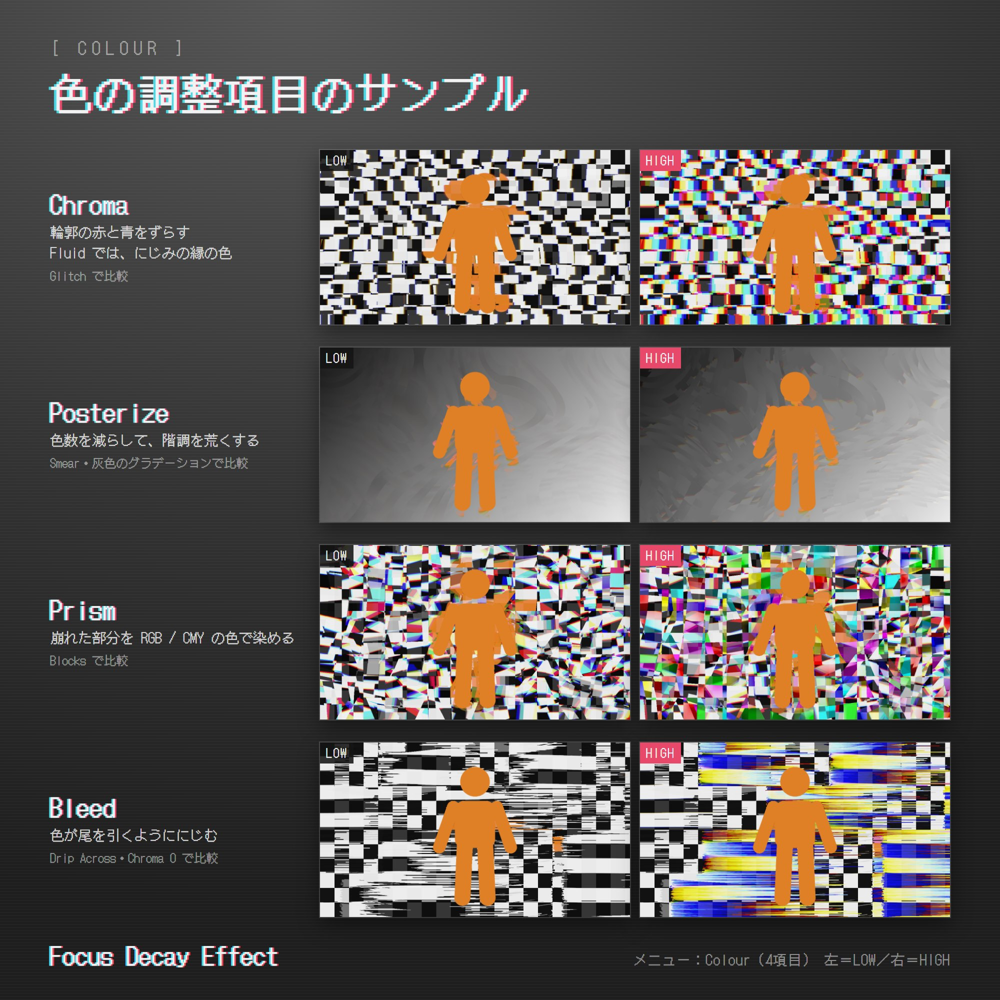

01これは何かAbout
VirtualLens2 で写真を撮ると、被写界深度（ボケ）がかかります。本ギミックは、ボケにあたる範囲にエフェクトをかけます。ピントの合っている被写体にはかかりません。VirtualLens2 adds depth of field (blur) to your photos. This effect processes the blurred areas, leaving your in-focus subject untouched.
これにより、被写体を残しつつ印象的なエフェクトを使用する事ができます。Create striking effects while keeping your subject intact.
崩し方は6種類。細く伸びる、タイル状に割れる、真下に垂れる、横に流れる、水に溶ける絵の具のようににじむ、長方形に切り刻まれる。強さや粗さは12個のダイヤルで調整できます。Choose from six effects: fine streaks, broken tiles, downward drips, sideways drips, paint-like diffusion, and fragmented rectangles. Twelve dials control their strength and texture.
prefab を2つ入れるとエフェクトを2段で重ねがけできます。たとえば ブロック（Blocks） で割ったあとに にじみ溶け（Fluid） でにじませる、といった組み合わせができます（エフェクトを重ねる）。Add two prefabs to stack two effects. For example, break the image into tiles with Blocks, then blend them with Fluid (see Stacking effects).
アバターのファイルには手を加えません。prefab を1つ入れるだけで、アップロード時のビルドでのみ組み込まれます。外すときは prefab を消すだけです。Your avatar files stay untouched. Add one prefab, and the effect is integrated only during the upload build. To remove it, simply delete the prefab.
VirtualLens2 が持っているピント情報（被写界深度の計算結果）をそのまま受け取り、ボケていると判定された画素にだけグリッチをかけています。どこが壊れるかを決めているのは構図ではなく、そのときのピントです。The effect uses VirtualLens2’s focus data (its depth-of-field calculations) to glitch only pixels identified as out of focus. Your current focus determines which areas break apart, rather than the composition itself.
色を足したり、別の画像を重ねたりはしていません。撮影中の映像そのものに、リアルタイムで処理が入ります。あとから加工しているのではなく、シャッターを切った時点ですでに壊れた状態で写ります。It does not add colours or overlay another image. It processes the camera feed itself in real time. The distortion is already present when you take the shot; it is not applied afterwards.
02必要なものRequirements
- VirtualLens2（ろじらぼ様）… 別途ご用意ください。本パッケージには含まれていませんVirtualLens2 (by Logilabo) — available separately; not included in this package
- Modular Avatar 1.18.0 以上Modular Avatar 1.18.0 or later
- NDMF … Modular Avatar に同梱のものNDMF — bundled with Modular Avatar
- Unity 2022.3 系Unity 2022.3 series
- PC 版 VRChat（Quest 単体では効果は出ません）VRChat for PC (the effect does not work on standalone Quest)
開発・確認に使ったバージョンDevelopment and testing versions
- VirtualLens2 2.12.4VirtualLens2 2.12.4
- Modular Avatar 1.18.7Modular Avatar 1.18.7
- Unity 2022.3.22f1Unity 2022.3.22f1
Unity 上でのビルド・シェーダーの描画テストに加え、VRChat 実機での動作を確認しています。Tested in VRChat, in addition to build and shader rendering tests in Unity.
VirtualLens2 のバージョンは固定していません。内部の構成が変わっていなければ、上記以外でもそのまま動く見込みです。もし構成が変わっていた場合はビルド時にエラーで止まる設計です。その場合はご連絡ください。No specific VirtualLens2 version is enforced. Other versions should work if their internal structure is unchanged. If that structure has changed, the build is designed to stop with an error. Please contact the author if this happens.
VirtualLens2 の解像度設定（1080p / 1440p / 2160p / 4320p）はどれでも構いません。崩れる範囲は、その解像度で実際に出るボケの量に合わせて判定します。Any VirtualLens2 resolution setting (1080p / 1440p / 2160p / 4320p) can be used. The affected area is determined by the actual amount of blur at that resolution.
03導入のしかたInstallation
VirtualLens2 を先に入れてください。順番が逆だとシェーダーがエラーになります。Import VirtualLens2 first. Importing in the opposite order causes shader errors.
置き場所はどこでも構いません。Assets/ の下であれば、フォルダ整理で何階層ネストしていても自動で追いかけます。あとから移動しても大丈夫です。VirtualLens2 can be anywhere under Assets/. It is found automatically, even in deeply nested folders, and can be moved later.
① Unity で① In Unity
- 次のどちらか好きな方を1つ、アバターのどこかにドラッグ＆ドロップする：
Assets/FocusDecayEffect/Focus Decay Effect (English).prefab… メニューが英語Assets/FocusDecayEffect/Focus Decay Effect (日本語).prefab… メニューが日本語Drag and drop one prefab in your preferred menu language anywhere on your avatar:Assets/FocusDecayEffect/Focus Decay Effect (English).prefab— English menusAssets/FocusDecayEffect/Focus Decay Effect (日本語).prefab— Japanese menus - アップロードするUpload your avatar
置く場所はどこでも構いません。アバター直下でも、ボーンの奥でも動きます。名前を変えても構いません。2つまで入れられます（エフェクトを重ねる）。3つ以上あるとビルド時にエラーで止まります。Place it anywhere on the avatar, directly under the root or nested under a bone. You can rename it. Up to two prefabs are supported (see Stacking effects). Three or more cause a build error.
VirtualLens2 側で特別な設定をしていただく必要はありません。No special configuration is needed in VirtualLens2.
2つのプレハブは機能が同じで、違うのはメニューの表示言語だけです。パラメータは共通なので、途中で入れ替えても保存値・プリセットは引き継がれます。Both prefabs have identical functionality; only the menu language differs. They share parameter names, so saved values and presets carry over when you switch between them.
② VRChat の中で② In VRChat
アバターのメニューから VirtualLens2 ▸ Effects ▸ フォーカスディケイ（Focus Decay） ▸ エフェクト（Effect） を開き、6種類のうちどれか1つを点けてください。Open VirtualLens2 ▸ Effects ▸ Focus Decay ▸ Effect in your avatar menu and enable one of the six effects.
エフェクトの一覧は エフェクト（Effect） の中です。フォーカスディケイ（Focus Decay） を開いただけでは、そこにモード名は出てきません。The effects are listed inside Effect. Opening Focus Decay alone does not show the mode names.
点けるまで写真は何も変わりません。6つとも消灯している状態が「効果オフ」です。ON/OFF のボタンはありません（点いているものをもう一度押せば消えます）。Your photos will not change until you enable an effect. All six toggles off means the effect is off. There is no separate ON/OFF button; press the active effect again to turn it off.
VirtualLens2 のモニターには映りませんThe effect does not appear on the VirtualLens2 monitor
効果が乗るのは VRChat 標準のカメラ（デフォルトカメラ）の側です。VirtualLens2 のモニターには出ません。The effect appears on VRChat’s standard (default) camera. It does not appear on the VirtualLens2 monitor.
そのため、構図とピントは VirtualLens2 のモニターで合わせ、崩れ方はデフォルトカメラのプレビューで確認するという撮り方になります。2つを見比べながら追い込んでください。Use the VirtualLens2 monitor to compose and focus, then check the distortion in the default camera preview. Compare the two as you fine-tune the shot.
モニターに出ていないからといって効いていないわけではありません。撮れた写真には入っています。An unchanged monitor does not mean the effect is inactive. The effect will appear in your captured photo.
効果は Unity 内では見えませんThe effect is not visible in Unity
写真・ストリーミングカメラでのみ描画される仕組みのため、シーンビュー・Play モード・ミラーには何も出ません。アップロードして VRChat 内で撮るまで確認できません。The effect renders only in photos and the streaming camera, so it does not appear in Scene view, Play mode, or mirrors. Upload your avatar and use the camera in VRChat to check it.
撮るときにWhen taking photos
VirtualLens2 のF 値を下げてください。このギミックはピントが合っていない範囲だけを壊すので、F 値が高いままだと画面全体にピントが合ってしまい、壊れる範囲がありません。F 値が最大まで上がっているとボケ自体が無効になり、効果は出ません。Lower the f-number in VirtualLens2. Only out-of-focus areas are distorted; a high f-number can leave the whole image in focus, with nothing to distort. At the maximum f-number, depth-of-field blur is disabled entirely, so the effect will not appear.
外しかたRemoving the effect
アバターに入れた prefab を削除するだけです。アバター側には何も残りません。パッケージごと消す場合は Assets/FocusDecayEffect フォルダを削除してください。Delete the prefab from your avatar. Nothing is left behind on the avatar. To remove the entire package, delete the Assets/FocusDecayEffect folder.
05エフェクト6種Six effects
エフェクト（Effect） の中にあります。6つのうち1つを選ぶと ON になります。すべて消灯させると OFF です。Open Effect and select one of the six modes to turn it on. Turn all of them off to disable the effect.


| エフェクトEffect | 崩れ方Appearance | 性格が変わるダイヤルDials with mode-specific behaviour |
|---|---|---|
| 引き伸ばし（Smear）Smear | いろいろな向きに細く伸びるFine streaks extending in various directions | —（6つの中で一番おとなしい）— (the most subtle of the six) |
| ブロック（Blocks）Blocks | タイル状に割れて、中身がずれるTiles split apart and their contents shift | 幅（Width） ＝ タイルの大きさWidth = tile size |
| したたり（下）（Drip Down）Drip Down | 細い列が真下に垂れるThin columns drip straight down | 強さ（Intensity） ＝ 垂れる列の数Intensity = number of dripping columns |
| したたり（横）（Drip Across）Drip Across | 細い列が横に流れるThin columns flow sideways | 強さ（Intensity） ＝ 流れる列の数Intensity = number of flowing columns |
| にじみ溶け（Fluid）Fluid | 水に溶ける絵の具のように、色がにじんで広がるColours spread like paint dissolving in water | ずらし量（Displace） ＝ 溶け具合（マーブル感） 色ずれ（Chroma） ＝ にじみの色Displace = marbling Chroma = colour of the diffusion |
| グリッチ（Glitch）Glitch | ランダムな長方形に切り取られてズレ、色が分離するRandom rectangles shift out of place with separated colours | 強さ（Intensity） ＝ 切り取られる数 なじませ（Merge） 0 で切り口が最も鋭いIntensity = number of fragments Merge at 0 gives the sharpest edges |
- 引き伸ばし（Smear）Smear
- いろいろな向きに細く伸びます。6つの中で一番おとなしく、写真に馴染みます。Fine streaks extend in various directions. The most subtle of the six effects, it blends naturally into a photo.
- ブロック（Blocks）Blocks
- タイル状に割れて、中身がずれます。格子が見えるのが持ち味です。幅（Width） で、細かいモザイクから大きなタイルまで変わります。Tiles split apart and their contents shift, creating a distinctive grid. Width ranges from a fine mosaic to large tiles.
- したたり（下）（Drip Down）Drip Down
- 細い列が真下に垂れます。裂け目は画面全体に散らばるので、どこが垂れるかはピントが決めます。Thin columns drip straight down. Breaks are scattered across the image, so your focus determines where the drips appear.
- したたり（横）（Drip Across）Drip Across
- 同じものが横に流れます。The same effect, flowing sideways.
- にじみ溶け（Fluid）Fluid
- 水に溶ける絵の具のように、色がにじんで広がります。ずらし量（Displace） がマーブル感のつまみです。上げるほど輪郭が曲がって渦を巻き、下げるほど穏やかなにじみになります。 0 にすると渦が完全に止まり、ボケに近い見え方になりますので、「効いていない」と感じたら 0.3〜0.5 から試してください。 色は 色ずれ（Chroma） が作ります。色ずれ（Chroma） を 0 にすると灰色のにじみになります。Colours spread like paint dissolving in water. Displace controls the marbling. Higher values bend contours into swirls; lower values produce gentler diffusion. At 0, swirling stops completely and the result looks more like blur. If the effect seems absent, try 0.3–0.5. Chroma supplies the colour. At Chroma 0, the diffusion is grey.
- グリッチ（Glitch）Glitch
- ランダムな大きさの長方形に切り取られてズレ、色が分離します。格子にならないよう、帯の高さも列の幅もばらついています。切り口はぼかしていません。 主に横へ飛びますが、ときどき縦にも飛びます。切り口を最も鋭くしたいときは なじませ（Merge） を 0 にしてください。Randomly sized rectangles shift out of place with separated colours. Varying row heights and column widths prevent a regular grid, and edges are not softened. Movement is mostly horizontal, with occasional vertical shifts. Set Merge to 0 for the sharpest edges.
06ダイヤル — 崩れ方Dials — distortion
どのダイヤルがどのモードに効くかHow each dial affects each mode
色のついたマスが、そのモードで意味が変わるものです。Highlighted cells indicate controls whose behaviour changes in that mode.
| 引き伸ばし（Smear）Smear | ブロック（Blocks）Blocks | したたり（下） / したたり（横）（Drip Down / Across）Drip Down / Across | グリッチ（Glitch）Glitch | にじみ溶け（Fluid）Fluid | |
|---|---|---|---|---|---|
| 強さ（Intensity）Intensity | 崩れる量Amount of distortion | 崩れる量Amount of distortion | 垂れる列の数Number of dripping columns | 切り取られる数Number of fragments | 崩れる量Amount of distortion |
| 効き始め（Falloff）Falloff | どのくらいボケたら最大まで壊すか（全モード共通）How much blur is needed for full distortion (all modes) | ||||
| 幅（Width）Width | 筋の太さStreak width | タイルの大きさTile size | 列の太さColumn width | 長方形の大きさRectangle size | にじみの塊の大きさSize of diffusion patches |
| 長さ（Length）Length | 筋の長さStreak length | 引きずる距離Drag distance | 垂れの長さDrip length | 長方形が飛ぶ距離Rectangle shift distance | にじみが届く距離Diffusion reach |
| ずらし量（Displace）Displace | 画素をずらす距離Pixel displacement distance | 溶け具合（マーブル感）Marbling | |||
| なじませ（Merge）Merge | 隣の崩れと引っ張り合って隙間を埋める（全モード共通）Pulls neighbouring distortions together to fill gaps (all modes) | ||||
| 変化の速さ（Speed）Speed | 崩れ方を1秒に何回抽選し直すか（全モード共通）How often the distortion pattern is randomised per second (all modes) | ||||
| 被写体保護（Protect）Protect | 被写体が背景へコピーされるのを防ぐPrevents the subject from being copied into the background | ほとんど効かないLittle effect | |||
| 色ずれ（Chroma）Chroma | 輪郭の赤と青をずらすOffsets red and blue at edges | にじみの縁の色そのものCreates the colour at diffusion edges | |||
| 減色（Posterize） プリズム（Prism） 色にじみ（Bleed）Posterize Prism Bleed | 色の仕上げ（全モード共通）Colour finishing (all modes) | ||||
表は横にスクロールできます。Scroll the table horizontally.
ほかのモードの ずらし量（Displace） は「画素をずらす距離」ですが、にじみ溶け（Fluid） では「溶け具合」です。上げるほど輪郭が曲がって渦を巻き、マーブル模様になります。In other modes, Displace sets pixel displacement distance. In Fluid, it controls marbling. Higher values bend contours into swirling, marbled patterns.
マーブル感を抑えたいときは、ずらし量（Displace） を下げてください。渦が収まって、素直なにじみに近づきます。0 まで下げると渦が完全に止まり、ボケに近い見え方になります。Lower Displace to reduce marbling. Swirls settle into smoother diffusion. At 0, they stop completely and the result looks more like blur.
調整（Adjust）には8つのダイヤルがあります。よく使う2つから説明します。Adjust holds eight dials. The two you will reach for most come first.


よく使う2つThe two most-used dials
- 強さ（Intensity）Intensity
- 効果の強さ。
したたり（下）（Drip Down） / したたり（横）（Drip Across） / グリッチ（Glitch） では意味が変わり、「壊れる数」になります。下げると薄くなるのではなく、垂れる列や飛ぶ長方形の数が減って歯抜けになります。Effect strength.
In Drip Down, Drip Across, and Glitch, it controls the number of distorted elements instead. Lower values leave gaps by reducing the number of dripping columns or displaced rectangles, rather than fading the effect. - 効き始め（Falloff）Falloff
- どのくらいボケたら最大まで壊すか。下げるほど、浅いボケでも壊れます。 初期値はダイヤルのかなり左寄りです。右に回すほど「深いボケしか壊さない」状態に近づき、行きすぎると何も起きなくなります。How much blur is needed for full distortion. Lower values affect even lightly blurred areas. The default is near the low end of the dial. Turning it up restricts the effect to deeper blur; too high, and nothing happens.
そのほかの6つThe other six
- 幅（Width）Width
- 崩れの大きさ。ブロック（Blocks） では 0 で細かいモザイク、1 で大きなタイル。グリッチ（Glitch） では切り取る長方形の大きさ。にじみ溶け（Fluid） ではにじみの塊の大きさ。Drip では垂れる列の太さ、引き伸ばし（Smear） では筋の太さです。Size of the distortion. In Blocks, 0 gives a fine mosaic and 1 gives large tiles. In Glitch, it sets rectangle size; in Fluid, diffusion patch size. In the Drip modes, it sets column width; in Smear, streak width.
- 長さ（Length）Length
- 崩れの長さ。走りの長さ、垂れの長さ。にじみ溶け（Fluid） ではにじみが届く距離、グリッチ（Glitch） では長方形が飛ぶ距離です。Length of streaks and drips. In Fluid, it sets how far diffusion reaches; in Glitch, how far rectangles shift.
- ずらし量（Displace）Displace
- 画素をどれだけ引きずるか。初期値の中央が標準で、右に回すと最大2倍まで伸びます。0 にすると絵は動かず、色の変化だけが残ります。
にじみ溶け（Fluid） だけ意味が変わり、マーブル感になります。0 で小さく穏やかなにじみ、1 で大きく渦を巻いたにじみ。にじみの広さも一緒に動きます。How far pixels are dragged. The default midpoint is the standard distance; turning it up extends that distance to twice as far. At 0, the image stays in place and only colour changes remain.
In Fluid, it controls marbling instead. At 0, diffusion is small and gentle; at 1, it forms large swirls. The spread of the diffusion also changes. - なじませ（Merge）Merge
- 隣の崩れと引っ張り合って、崩れていない隙間を埋めます。上げるほど効果が広がります。 逆にグリッチ（Glitch） の切り口を鋭く保ちたいときは 0 にしてください。Pulls neighbouring distortions together to fill undistorted gaps. Higher values spread the effect further. Set it to 0 to keep Glitch edges sharp.
- 変化の速さ（Speed）Speed
- 崩れ方を1秒に何回抽選し直すか。0 にすると止まり、同じ構図なら何枚撮っても同じ絵になります。写真の中で何かが動くダイヤルではありません。追い込んだ1枚を撮り直したいときは 0 にしてください。How often the distortion pattern is randomised per second. At 0, the pattern freezes, so the same composition produces the same result across shots. It does not animate objects within a captured photo. Use 0 when you want to retake a carefully tuned shot.
- 被写体保護（Protect）Protect
- 被写体が背景へコピーされるのを防ぎます。初期値は 0（＝防がない）で、被写体が引きずられて伸びます。像が二重に見えるのが気になるときは上げてください。被写体そのものは、どの値でも壊れません。
にじみ溶け（Fluid） ではほとんど効きません。周囲から広く色を集める仕組みのため、1点を見る判定では止められません。Prevents the subject from being copied into the background. The default is 0 (no protection), allowing the subject to be dragged and stretched. Raise it if you see unwanted duplicate images. The in-focus subject itself stays intact at any value.
It has little effect in Fluid. Fluid gathers colours from a wide area, which a single-point check cannot block.
07色（Colour）Colour


- 色ずれ（Chroma）Chroma
- 赤と青を、崩れた向きの前後から取ってくる量。輪郭のある場所ほど色がずれて見えます。ボケが深く平坦な場所では変化が小さく出ます。
にじみ溶け（Fluid） では役割が違い、にじみの縁に出る色そのものを作ります。0 にすると灰色のにじみになります。How far red and blue are sampled from opposite ends of the distortion direction. Colour separation is most visible around edges. The change is subtler in flat, heavily blurred areas.
In Fluid, it creates the colours along the edges of the diffusion. At 0, the diffusion is grey. - 減色（Posterize）Posterize
- 減色の強さ。Strength of colour reduction.
- プリズム（Prism）Prism
- 割れた液晶のように、崩れた場所へ原色がまとまって入ります。強い効果です。0.1〜0.3 から試してください（初期値は 0）。Adds patches of primary colour to distorted areas, like a cracked LCD. This is a strong effect; start around 0.1–0.3 (the default is 0).
- 色にじみ（Bleed）Bleed
- 色が、裂けた向きに尾を引いて滲みます。色ずれ（Chroma） が輪郭の色ズレなのに対して、こちらは流れる滲みです。見た目にはっきり出るのはこちらです。Colours trail and bleed along the direction of the breaks. While Chroma separates colours at edges, Bleed creates flowing trails. Bleed is the more visibly pronounced effect.
08プリセット（Presets） と リセット（Reset）Presets and Reset
プリセット（Presets） — 設定を4つまで保存Presets — save up to four setups
保存（Save） ▸ 保存 1（Save 1） で今の設定を保存し、呼び出し（Load） ▸ 呼び出し 1（Load 1） で呼び出します。保存されるのはダイヤル12本と、選んでいるエフェクトの種類です。Use Save ▸ Save 1 to save your current setup and Load ▸ Load 1 to recall it. Presets store all twelve dials and the selected effect.
呼び出し（Load） と 保存（Save） は別のメニューに分けてあります。撮影中に誤って上書きしないためです。Load and Save are in separate menus to prevent accidental overwrites while shooting.
まだ保存していないスロットを 呼び出し（Load） すると、ダイヤルは初期値に戻り、エフェクトは 引き伸ばし（Smear） が点いた状態になります。
完全に消したいときは リセット（Reset） を使ってください。Loading an unused slot restores the default dial values and enables Smear. Use Reset to turn the effect off completely.
リセット（Reset）Reset
ダイヤル12本を初期値に戻し、エフェクトをオフにします。ダイヤルは今の値が画面から読めないので、触りすぎて分からなくなったらここに戻ってきてください。Restores all twelve dials to their defaults and turns the effect off. The current dial values are not shown on screen, so use Reset if you lose track of your adjustments.
09エフェクトを重ねるStacking effects
prefab をもう1つ入れると、2種類のエフェクトを重ねがけできます。入れかたは1つ目と同じで、アバターのどこかにドラッグ＆ドロップするだけです。Add another prefab to stack two effects. As with the first, simply drag and drop it anywhere on the avatar.
英語メニューと日本語メニューのプレハブを1つずつ入れて重ねがけすることもできます。メニュー名は各プレハブの表示言語に従います。You can stack one English-menu prefab and one Japanese-menu prefab. Each menu uses the language of its own prefab.
順番Processing order
階層で上にある方が1段目、下にある方が2段目です。1段目が壊した写真を、2段目がもう一度壊します。The higher prefab in the hierarchy is stage 1; the lower one is stage 2. Stage 2 processes the image already distorted by stage 1.
順番で見た目が変わります。たとえば ブロック（Blocks） の上に にじみ溶け（Fluid） をかけると割れたタイルがにじみ、にじみ溶け（Fluid） の上に ブロック（Blocks） をかけるとにじんだ絵がタイルに割れます。入れ替えたいときは、階層で2つの prefab の上下を入れ替えてください。Order changes the result. Applying Fluid after Blocks makes broken tiles bleed together; applying Blocks after Fluid breaks the diffused image into tiles. To reverse the order, swap the two prefabs in the hierarchy.
メニューMenus
VirtualLens2 ▸ Effects ├ フォーカスディケイ ← 1段目 └ フォーカスディケイ 2 ← 2段目VirtualLens2 ▸ Effects ├ Focus Decay ← Stage 1 └ Focus Decay 2 ← Stage 2
中身はどちらも同じ構成です。ダイヤル・プリセット・リセット（Reset） は段ごとに別々で、片方を回してももう片方は動きません。片方だけ使いたいときは、もう片方のエフェクトを消灯しておけば効果はかかりません。Both effect menus have the same structure. Dials, presets, and Reset are independent for each stage. Adjusting one does not change the other. To use just one stage, turn off the effect in the other.
3つ目は入れられませんA third active prefab is not supported
重ねられるのは2つまでです。3つ以上あるとビルドがエラーで止まります。You can stack up to two effects. Three or more cause the build to stop with an error.
見比べ用に置いておきたいときは、3つ目のチェックを外して無効にしてください。無効なものは数に入らず、有効なものだけで上から1段目・2段目になります。1段目を無効にすれば、残った方が1段目として動きます。To keep a third prefab for comparison, uncheck it to disable it. Disabled prefabs are not counted; only active prefabs are assigned stages 1 and 2, from top to bottom. If you disable stage 1, the remaining prefab becomes stage 1.
prefab を選ぶと、Inspector に何段目かが表示されます。3つ目には警告が出ます。Select a prefab to see its stage in the Inspector. A third prefab displays a warning.
2段にすると、写真の処理が2回分になります。特に にじみ溶け（Fluid） は重いエフェクトなので、にじみ溶け（Fluid） を含む組み合わせは負荷が大きくなります。重いと感じたら1段に戻してください。Two stages process the photo twice. Fluid is particularly demanding, so combinations that include Fluid cost more performance. Return to one stage if performance suffers.
10思った絵にならないときGetting the look you want
効きが弱い / 崩れる範囲が狭いThe effect is weak or covers too little of the image
上から順に試してください。Try these in order:
- VirtualLens2 の F 値を下げる。ピントの合う範囲が狭くなり、崩れる面積そのものが広がりますLower VirtualLens2’s f-number. This narrows the in-focus area and increases the area available for distortion
- 効き始め（Falloff） を下げる。浅いボケでも最大の強さに届くようになりますLower Falloff. Even light blur can then reach full effect strength
- 強さ（Intensity） / 長さ（Length） / ずらし量（Displace） を上げるRaise Intensity / Length / Displace
- なじませ（Merge） を上げる。崩れていない隙間が埋まりますRaise Merge. This fills undistorted gaps
被写体が二重に写るThe subject appears twice
被写体保護（Protect） を上げてください。初期値は 0 で、被写体が背景へ引きずられる状態です。引きずり自体を演出として使いたい場合は下げたままにします。Raise Protect. Its default is 0, which allows the subject to be dragged into the background. Leave it low if you want to use that dragging as part of the look.
同じ絵をもう一度撮りたいYou want to recreate the same shot
変化の速さ（Speed） を 0 にしてください。崩れ方の抽選が止まり、同じ構図なら同じ絵になります。Set Speed to 0. This stops the pattern from being randomised, so the same composition produces the same result.
写真が何も変わらないThe photo does not change
- エフェクトを選んでいない（
エフェクト（Effect）の中の6つが全部消灯＝OFF です）No effect is selected (all six toggles insideEffectare off) - F 値が高すぎて、画面全体にピントが合っているThe f-number is too high, leaving the whole image in focus
- F 値が最大まで上がっていて、ボケ自体が無効になっているThe f-number is at its maximum, disabling depth-of-field blur entirely
- Unity 内で見ている（Unity では見えません）You are viewing it in Unity (the effect is not visible there)
- VirtualLens2 のモニターを見ている（モニターには映りません。デフォルトカメラ側で確認してください）You are looking at the VirtualLens2 monitor (the effect does not appear there; check the default camera)
メニューには出るのに効果が出ないThe menu appears, but the effect does not
prefab を、無効になっているオブジェクトの下に置いていませんか。親オブジェクトが有効になっているかご確認ください。Check whether the prefab is under a disabled object. Make sure its parent objects are enabled.
11エラーと対処Errors and fixes
ビルド時に出るエラーです。クリックすると対処が開きます。These errors appear during the build. Click an error to see how to resolve it.
シェーダーが見つからないか、コンパイルに失敗していますShader not found or compilation failed
VirtualLens2 がこのプロジェクトに入っていません。先に導入してください。VirtualLens2 is missing from this project. Import it first.
入っているのにこのエラーが出る場合は、メニューの Tools ▸ Focus Decay ▸ Locate VirtualLens2 を実行してください。VirtualLens2 を探し直して、シェーダーの参照先を合わせます。If VirtualLens2 is already installed, run Tools ▸ Focus Decay ▸ Locate VirtualLens2. This searches for VirtualLens2 again and updates the shader references.
直せない場合は Assets/FocusDecayEffect を削除すれば元に戻ります。If the issue persists, delete Assets/FocusDecayEffect to undo the installation.
このアバターに VirtualLens2 がセットアップされていませんVirtualLens2 is not set up on this avatar
そのアバターに VirtualLens2 が入っていません。先に導入してください。VirtualLens2 is missing from this avatar. Add it first.
VirtualLens2 が Remote Only 構成になっているため、写真を処理する部分がアバターに存在しませんVirtualLens2 is set to Remote Only, so the avatar has no photo-processing components
VirtualLens Settings の Remote Only が強制有効になっています。Auto に戻すか、PC 版では Remote Only を使わない設定にしてください。Remote Only is forced on in VirtualLens Settings. Set it back to Auto, or configure it so Remote Only is not used on PC.
VirtualLens2 の被写界深度（ボケ）の描画部分が見つかりませんVirtualLens2’s depth-of-field renderer was not found
VirtualLens2 のボケ機能が無効になっています。通常は既定で有効です。古い VRChat SDK をお使いの場合、VirtualLens Settings の Aperture に「Enable DoF Simulation」という項目が出ますので、チェックが入っているかご確認ください。VirtualLens2’s depth-of-field feature is disabled. It is normally enabled by default. With an older VRChat SDK, check that “Enable DoF Simulation” is enabled under Aperture in VirtualLens Settings.
VirtualLens2 の被写界深度まわりの構成が想定と異なりますVirtualLens2’s depth-of-field structure differs from the expected layout
お使いの VirtualLens2 のバージョンを添えてご連絡ください。対応を検討します。Please contact the author with your VirtualLens2 version so compatibility can be investigated.
VirtualLens2 が Destructive モードになっている可能性がありますVirtualLens2 may be in Destructive mode
VirtualLens2 を Apply でシーンに焼く方式で使っています。非破壊モードでご利用ください。VirtualLens2 has been baked into the scene using Apply. Use non-destructive mode instead.
Focus Decay Effect がこのアバターに 3 個入っています。重ねられるのは2個までです This avatar has 3 Focus Decay Effect instances. Only 2 can be stacked
有効な prefab が3つ以上入っています。多い分を削除するか、チェックを外して無効にしてください。上にある2つが1段目・2段目になります（エフェクトを重ねる）。There are three or more active prefabs. Delete the extras or uncheck them to disable them. The top two become stages 1 and 2 (see Stacking effects).
2段目の部品が見つかりませんStage 2 components are missing
VirtualLens2 の深度テクスチャを受け取れませんでしたCould not receive VirtualLens2’s depth texture
VirtualLens2 の構成が想定と異なります。お使いの VirtualLens2 のバージョンと設定を添えてご連絡ください。VirtualLens2’s structure differs from the expected layout. Please contact the author with your VirtualLens2 version and settings.
VirtualLens2 が複数見つかりましたMultiple VirtualLens2 installations found
プロジェクトに VirtualLens2 が2つ以上入っています。VCC で入れたものと手動で入れたものが二重になっているときによく出ます。警告に出ているパスのうち、使わない方を削除してください。The project contains two or more copies of VirtualLens2. This often happens when a VCC installation and a manual installation coexist. Delete the unused copy at one of the paths listed in the warning.
Modular Avatar の更新を求めるウィンドウが出るA window asks you to update Modular Avatar
Modular Avatar 1.18.0 以上が必要です。更新してください。Modular Avatar 1.18.0 or later is required. Update it to continue.
12制限Limitations
- PC 専用です。Quest / iOS 向けのビルドでは、prefab を入れたまま自動的に無効になりますPC only. The effect is automatically disabled in Quest / iOS builds, so the prefab can stay on the avatar
- VirtualLens2 の非破壊モード専用ですRequires VirtualLens2’s non-destructive mode
- VirtualLens2 の置き場所は自由です（
Assets/の下であればネストしていても追従します）VirtualLens2 can be placed anywhere underAssets/, including nested folders - 1つのアバターに2つまで入れられます（2段の重ねがけ）。3つ以上はビルドが止まりますUp to two instances per avatar for two-stage stacking. Three or more stop the build
- 効果は写真とストリーミングカメラにだけ出ます。自分の視界・ミラー・他の人からの見え方は変わりませんThe effect appears only in photos and the streaming camera. It does not change your view, mirrors, or how other people see you
- VirtualLens2 のモニターには映りません。崩れ方の確認はデフォルトカメラのプレビューでおこなってくださいIt does not appear on the VirtualLens2 monitor. Check the default camera preview to see the distortion
パラメータは1つあたり 66 本（2つ入れると 132 本）ありますが、すべてローカル専用で、同期コストは 0 bit です（1つあたり、うち 52 本はプリセット4枠の保存用）。他の人には一切送信されません。Each instance uses 66 parameters (132 for two instances), but all are local-only, with a sync cost of 0 bits. Of those, 52 per instance store the four preset slots. Nothing is sent to other players.
13更新のしかたUpdating
バージョンを入れ替えるときは、次の順でお願いします。To install a different version, follow this order:
- アバターから Focus Decay Effect を削除Remove Focus Decay Effect from your avatar
Assets/FocusDecayEffectフォルダごと削除Delete the entireAssets/FocusDecayEffectfolder- 新しい
.unitypackageをインポートImport the new.unitypackage - prefab を入れ直すAdd the prefab again
ファイルの識別子が変わるため、上書きインポートだけだと参照が切れます。File identifiers change between packages, so importing over the old files can break references.
14更新履歴Changelog
v1.0（最新版）v1.0 (latest)
2026-10-022026-10-02
追加Added
- 日本語メニューのプレハブを追加（英語メニューのプレハブと選べる）Added a Japanese-menu prefab; choose either English or Japanese menus.
- VirtualLens2 のショートカット — フォーカスディケイ（Focus Decay） のメニューから、VirtualLens2 の
F値（Aperture）（F値）・ズーム（Zoom）・AFモード（AF Mode）（ポイントAF（Point AF） / 人物AF（Face AF））を直接操作できるようにしました（メニューの場所）VirtualLens2 shortcuts — control VirtualLens2’sAperture(f-number),Zoom, andAF Mode(Point AF / Face AF) directly from the Focus Decay menu (see Finding the menu)
変更Changed
強さ（Intensity）と効き始め（Falloff）を調整（Adjust）の中へ移しました。空いた枠に VirtualLens2 のショートカットを置いていますMovedIntensityandFalloffintoAdjust. Their previous slots now hold the VirtualLens2 shortcuts
設定の引き継ぎPreserving settings
- パラメータ名は変えていません。v0.9.4.1 から更新しても、保存済みの設定とプリセットはそのまま引き継がれますParameter names are unchanged. Saved settings and presets carry over when updating from v0.9.4.1
v0.9.4.1v0.9.4.1
2026-09-252026-09-25
追加Added
- エフェクトの重ねがけ — prefab を2つ入れると、2種類のエフェクトを重ねられます。階層で上が1段目、下が2段目です（エフェクトを重ねる）Effect stacking — add two prefabs to combine two effects. The higher prefab in the hierarchy is stage 1; the lower one is stage 2 (see Stacking effects)
- prefab の Inspector に、何段目かを表示するようにしました。3つ目には警告が出ますThe prefab’s Inspector now shows its stage. A third prefab displays a warning
変更Changed
- 1つのアバターに入れられる数を「1つ」から「2つまで」に広げました。3つ以上はビルド時にエラーで止まりますRaised the per-avatar limit from one instance to two. Three or more cause a build error
- チェックを外して無効にした prefab は、メニューにも出なくなりました。これまでは、無効にしてもメニューだけが残っていましたUnchecked, disabled prefabs no longer appear in the menu. Previously, their menus remained even when disabled
設定の引き継ぎPreserving settings
- 1つ目の prefab のパラメータ名は変えていません。v0.9.4 から更新しても、保存済みの設定とプリセットはそのまま引き継がれますParameter names for the first prefab are unchanged. Saved settings and presets carry over when updating from v0.9.4
v0.9.4v0.9.4
2026-09-252026-09-25
追加Added
- にじみ溶け（Fluid） — 水に溶ける絵の具のように、色がにじんで広がります。ずらし量（Displace） がマーブル感のつまみですFluid — colours spread like paint dissolving in water. Displace controls the marbling
- グリッチ（Glitch） — ランダムな大きさの長方形に切り取られてズレ、色が分離しますGlitch — randomly sized rectangles shift out of place with separated colours
変更Changed
- エフェクト6種を
エフェクト（Effect）サブメニューに移しました。これまでフォーカスディケイ（Focus Decay）を開いてすぐ並んでいたものが、1階層下がっています。パラメータ名は変えていないので、保存済みの設定とプリセットはそのまま引き継がれますMoved all six effects into theEffectsubmenu. They are now one level belowFocus Decayinstead of appearing immediately. Parameter names are unchanged, so saved settings and presets carry over - 空いた枠に
強さ（Intensity）と効き始め（Falloff）を root へ昇格させました。よく使う2つが1タップ浅くなりますPromotedIntensityandFalloffto the root menu using the freed slots. These frequently used controls now take one fewer tap to reach 調整（Adjust）は残りの6項目（幅（Width） / 長さ（Length） / ずらし量（Displace） / なじませ（Merge） / 変化の速さ（Speed） / 被写体保護（Protect））になりましたAdjustnow contains the remaining six controls (Width / Length / Displace / Merge / Speed / Protect)
修正Fixed
- グリッチ（Glitch） では 幅（Width） が二重に掛かっていた（上限側で画面幅を超える板になっていました）Width was applied twice in Glitch, producing slabs wider than the screen at high values
v0.9.3v0.9.3
2026-09-252026-09-25
変更Changed
- VirtualLens2 の置き場所が自由になりました。これまでは
Assets/VirtualLens2/に置く必要がありましたが、Assets/の下であれば何階層ネストしていても自動で追いかけます。あとから移動しても大丈夫ですVirtualLens2 can now be placed anywhere. Previously it had to be inAssets/VirtualLens2/. It is now found automatically anywhere underAssets/, including deeply nested folders, and can be moved later - うまく見つからないときのために
Tools ▸ Focus Decay ▸ Locate VirtualLens2を追加しましたAddedTools ▸ Focus Decay ▸ Locate VirtualLens2for cases where automatic detection fails
v0.9.2v0.9.2
2026-09-242026-09-24
追加Added
- リセット（Reset）（メニューの一番上）— ダイヤル12本を初期値に戻し、エフェクトをオフにしますReset (at the top of the menu) — restores all twelve dials to their defaults and turns the effect off
修正Fixed
- ブロック（Blocks） の 幅（Width） がタイルの大きさを変えていなかった。0 で細かいモザイク、1 で従来と同じ大きさになりますWidth in Blocks did not change tile size. It now ranges from a fine mosaic at 0 to the previous tile size at 1
- 被写体保護（Protect） が効かない。少しだけボケた被写体の輪郭に対して、最大でも半分しか効いていませんでしたProtect was ineffective. Even at maximum, it was only half effective on slightly blurred subject edges
- 色ずれ（Chroma） が見えない。ずらし量が小さすぎました。約4倍にしていますChroma was barely visible. The offset was too small; it is now about four times larger
変更Changed
- 被写体保護（Protect） の初期値を 0.5 → 0 に。既定では被写体が引きずられますChanged the Protect default from 0.5 to 0. The subject is now dragged by default
v0.9.1v0.9.1
2026-09-232026-09-23
変更Changed
- メニューを
VirtualLens2 ▸ Effects ▸ フォーカスディケイ（Focus Decay）に移動Moved the menu toVirtualLens2 ▸ Effects ▸ Focus Decay - 調整（Adjust） / 色（Colour） / プリセット（Presets） の3グループに整理Organised controls into three groups: Adjust / Colour / Presets
- Opacity → 強さ（Intensity） に改名（このため保存していた設定はリセットされます）Renamed Opacity to Intensity (this resets previously saved settings)
追加Added
- なじませ（Merge） — 隣の崩れと引っ張り合って隙間を埋めるMerge — pulls neighbouring distortions together to fill gaps
- 変化の速さ（Speed） — 崩れ方の抽選速度。0 で停止Speed — controls how often the distortion pattern is randomised; 0 freezes it
- 色にじみ（Bleed） — 色が裂けた向きに滲むBleed — colours bleed along the direction of the breaks
- 被写体保護（Protect） — 被写体が背景へコピーされるのを防ぐProtect — prevents the subject from being copied into the background
- プリセット（Presets） — 設定を4つ保存／呼び出し（同期コストは 0 bit のまま）Presets — save and load four setups (sync cost remains 0 bits)
修正Fixed
- したたり（下）（Drip Down） で被写体が二重に写る問題Duplicate subject images in Drip Down
- 効き始め（Falloff） の右半分が効いていなかったThe upper half of the Falloff dial had no effect
- VirtualLens2 の解像度を 1440p 以上にすると崩れる範囲が狭くなっていたThe affected area shrank at VirtualLens2 resolutions of 1440p and above
v0.9.0v0.9.0
2026-09-172026-09-17
- 初版Initial release
15利用規約Terms of use
本ツールの利用によって生じたいかなる請求や損害、その他の義務について、作者は一切の責任を負わないものとします。The author accepts no liability for any claims, damages, or other obligations arising from use of this tool.
改変の有無によらず、本ツールの一部またはすべてを再配布することを禁じます。Redistribution of any part or all of this tool is prohibited, whether modified or unmodified.
本ツールを使用して生成したコンポーネントを含むアバターを、第三者が利用可能な状態にすることを禁じます。（例: public アバターとしてのアップロードや Prefab の配布など）You may not make an avatar containing components generated by this tool available for use by third parties. Examples include uploading it as a public avatar or distributing its prefab.
できることPermitted uses
- 本ツールを導入したアバターを、自分用（private）としてアップロードすることUpload an avatar containing this tool for your own use as a private avatar
- 本ツールで撮影した写真を、個人・商用を問わず公開することPublish photos taken with this tool for personal or commercial purposes
- 自分の用途に合わせて本ツールを改変して使うこと（再配布は上記のとおり禁止）Modify this tool for your own use (redistribution remains prohibited as stated above)
VirtualLens2 についてAbout VirtualLens2
本ツールは VirtualLens2（ろじらぼ様）を前提としています。ご利用にあたっては、VirtualLens2 の利用規約もあわせてお守りください。This tool requires VirtualLens2 by Logilabo. You must also comply with the VirtualLens2 terms of use.
本ツールには VirtualLens2 のファイルは一切含まれていません。VirtualLens2 は別途ご購入・ご用意ください。No VirtualLens2 files are included in this tool. Purchase or obtain VirtualLens2 separately.
本ツールの配布にあたっては、VirtualLens2 の作者であるろじらぼ様に事前にご相談し、許可をいただいています。Before distributing this tool, the author consulted Logilabo, the creator of VirtualLens2, and received permission.
素晴らしいツールを公開してくださっていることに、あらためて感謝申し上げます。Many thanks to Logilabo for making such a wonderful tool available.
同じ内容をパッケージ同梱の LICENSE.md にも収録しています。記載に相違があった場合は、同梱ファイルの内容を優先します。These terms are also included in the package: LICENSE.md (Japanese) and LICENSE_en.md (English translation). If there is any discrepancy, the packaged Japanese file, LICENSE.md, takes precedence.
16連絡先Contact
不具合のご報告、ご要望などありましたらお気軽にご連絡ください。本ギミックは随時アップデートする予定です。Feel free to get in touch with bug reports or requests. Updates to this effect are planned on an ongoing basis.
- 作者: YutanpopoZzzAuthor: YutanpopoZzz
- X: @YutanpopoZzzX: @YutanpopoZzz
- Discord:
yutanpopoDiscord:yutanpopo
Unity のバージョン、VirtualLens2 のバージョン、Console に出ているエラー文をあわせてお伝えいただけると、こちらで再現しやすく助かります。Please include your Unity version, VirtualLens2 version, and any error text from the Console. This helps the author reproduce the issue.